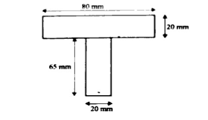
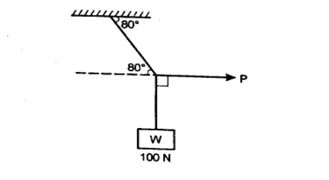
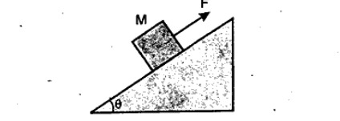
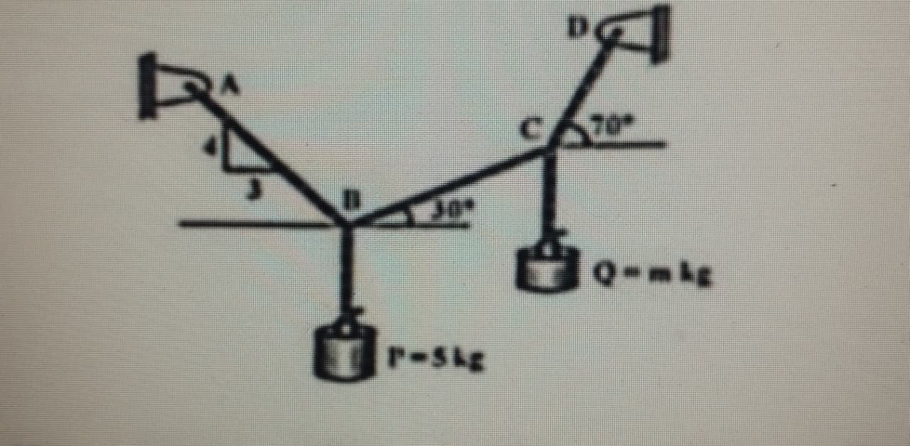
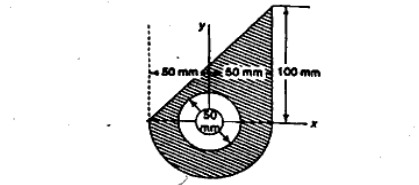
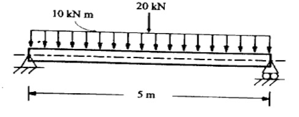
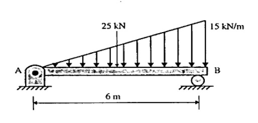
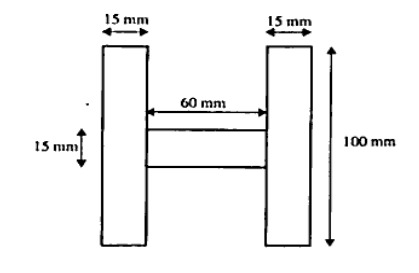
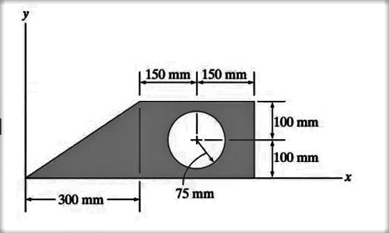

Rajiv Gandhi Proudyogiki Vishwavidyalaya, Bhopal
New Scheme Based On AICTE Flexible Curricula
Common to All Disciplines | First Year
3L-0T-2P 4 Credits
Unit- I : Building Materials & Construction
Stones, bricks, cement, lime, timber-types, properties, test & uses, laboratory tests concrete and mortar Materials: Workability, Strength properties of Concrete, Nominal proportion of Concrete preparation of concrete, compaction, curing. Elements of Building Construction, Foundations conventional spread footings, RCC footings, brick masonry walls, plastering and pointing, floors, roofs, Doors, windows, lintels, staircases – types and their suitability
Previous Years questions appears in RGPV exam.
Q.1) a) Write about physical and chemical properties of concrete. (Nov-2022)
b) Explain the different types of stair case used in building construction with a neat sketch. (Nov-2022)
Q.2) Narrate about the classification of stone used in construction industry. (Nov-2022)
Q.3) What is the purpose to provide the foundation and describe its various types in details? (June-2023)
Q.4) a) List out the various stages for the construction of a building and list out the various building materials used in construction works with brief details. (June-2023)
b) Define any two-laboratory test, those are conducted on bricks and cement. (June-2023)
Q.5) Define the following terms with respect to concrete: i) Workability, ii) Segregation, iii) Bleeding. (June-2023)
Q.6) a) What are the various types of bonds used in the construction of brick masonry? (June-2023)
b) Discuss plastering and pointing in Civil Engineering construction works. (June-2023)

Q.7) a) Write short notes on: i) Shallow foundation. (Dec-2023)
b) What is the workability of concrete? Explain those factors that affecting the workability of concrete. (Dec-2023)
Q.8) Explain nominal and design mix concrete in details. (Dec-2023)
Q.9) Define any two-field test; those are conducted on cement and sand. (Dec-2023)
Q.10) a) What is the composition of cement? Explain in detail. (Dec-2023)
b) Define any four of the following terms: ii) Initial and final setting time of cement, iii) Efflorescence, iv) Curing of concrete, v) Plastering and pointing. (Dec-2023)
Q.11) What are the various types of doors and windows used in the building construction? (Dec-2023)
Q.12) Write short notes on: v) Types of staircase. (Dec-2023)
Q.13) a) Give an explanation of "workability of concrete" and discuss over the factors that affect it. (June-2024)
b) Explain about any two-laboratory experiments that were done on concrete. (June-2024)
Q.14) a) Using a clear sketch, describe the various stair case types utilized in the construction of structures. (June-2024)
b) Identify the various kinds of stones that serve a purpose in the construction Industry. (June-2024)
Q.15) Write on the characteristics of concrete's chemical and physical state. (Dec-2024)
Q.16) Briefly talk about the concrete preparation procedure. (Dec-2024)
Q.17) a) Describe in brief about the different types of RCC footing. (Dec-2024)
b) Briefly discuss the compaction and curing process. (Dec-2024)
Q.18) What are different characteristics of stones and their methods of testing. Write the name of various types of stones which are used in building work? (June-2025)
Q.19) Discuss the general principles that need to be observed in brick masonry construction. (June-2025)
Q.20) a) Explain various types of stone masonry. Draw typical sketches to illustrate them. (June-2025)
b) What is mortar? Describe the estimation of mortar requirement. (June-2025)
Q.21) Describe various types of windows. (June-2025)
Q.22) What are the constituent, desirable properties, and types of Paints? (June-2025)
Expected Sample Questions for Dec-2025 Exam (Based on Syllabus Analysis)
Q.1) Explain the manufacturing process of Portland Cement with a flow chart. (Predicted)
Q.2) Discuss the various defects in Timber and their causes. (Predicted)
Q.3) Explain the different types of Shallow Foundations with sketches. (Predicted)
Q.4) Describe the Slump Cone Test for determining the workability of concrete. (Predicted)
Q.5) Differentiate between English Bond and Flemish Bond in brick masonry. (Predicted)
Unit - II : Surveying & Positioning
Introduction to surveying Instruments – levels, thedolites, plane tables and related devices. Electronic surveying instruments etc. Measurement of distances – conventional and EDM methods, measurement of directions by different methods, measurement of elevations by different methods. Reciprocal leveling.
Previous Years questions appears in RGPV exam.
Q.1) Explain the individual component of the Theodolite with a Sketch. (Nov-2022)
Q.2) a) Illustrate the difference between the Height of Collimation and Rise and Fall method. (Nov-2022)
b) The following are the consecutive reading were taken with a levelling instrument at intervals of 20 m. 2.375, 1.730, 0.615, 3.450, 2.835, 2.070, 1.835, 0.985, 0.435, 1.630, 2.255 and 3.630 m. The instrument was shifted after the fourth and eighth reading. The last reading was taken on a BM of RL 110.200 m. Find the RLS of all the point using Rise and Fall method and satisfy the answer with arithmetic Check. (Nov-2022)
Q.3) Explain about the following Terms: c) Plane table and its used instruments. (Nov-2022, Dec-2023)
Q.4) What do you understand by the term 'levelling'? Explain 'reciprocal levelling' in details. (June-2023)
Q.5) Write short notes on: iii) Type of surveying, iv) EDM. (June-2023)
Q.6) Explain the 'auto level' with a neat sketch. (June-2023)
Q.7) Define the following terms: i) True bearing and magnetic bearing, ii) Fore sight and back sight, iii) Local attraction, iv) Errors in chain surveying. (June-2023)
Q.8) Write short notes on: iv) Geodetic surveying. (Dec-2023)
Q.9) What is the local attraction in surveying? How is it detected at any survey station? (Dec-2023)
Q.10) Write short notes on: i) Magnetic declination, iii) Plane tables. (Dec-2023)
Q.11) Give a brief explanation of the various levelling operations (Profile, Cross-sectional, Differential, and Fly levelling) that are utilized in field surveys. (June-2024)
Q.12) a) The following are the consecutive reading were taken with a level a 4-meter levelling staff on a continuously sloping ground at a common interval of 30 m. 0.555(A), 2.545, 3.345, 4.125, 5.835, 0.755, 2.350, 3.455, 1.825, 4.485, 1.585, 2.415, 1.840, 3.765 and 3.855(B). The R.L. of the first reading at A was 490.500. Make entries in level book and apply the usual check. Determine the gradient of AB. The instrument is shifted after 4th and 10th reading. (June-2024)
b) Explain in a brief about the difference between line of collimation and Rise & Fall Method. (June-2024)
Q.13) Explain about: b) EDM measurement and conventional measurement. (June-2024)
Q.14) Use a sketch to illustrate each Theodolite component. (Dec-2024)
Q.15) a) Explain in briefly about the Reciprocal levelling. (Dec-2024)
b) The following are the consecutive reading were taken with a levelling instrument at intervals of 20 m. 3.375, 2.730, 1.615, 2.450, 3.835, 5.070, 4.835, 2.985, 4.435, 2.630, 4.255 and 5.630 m. The instrument was shifted after the fourth and eight reading. The last reading was taken BM of RL 125.250 m. Find the RLs of all the point using Rise and Fall method and satisfy the answer with arithmetic Check. (Dec-2024)
Q.16) With neat sketch explain the principle of positioning with GPS. (June-2025)
Q.17) Explain with a neat sketch the following: i) Traversing by the method of included angles, ii) Traversing by the method of direct angles. (June-2025)
Expected Sample Questions for Dec-2025 Exam (Based on Syllabus Analysis)
Q.1) Describe the temporary adjustments of a Vernier Theodolite. (Predicted)
Q.2) Explain the principle of Electronic Distance Measurement (EDM). (Predicted)
Q.3) Derive the expression for curvature and refraction correction in leveling. (Predicted)
Q.4) Explain the method of Radiation and Intersection in Plane Table Surveying. (Predicted)
Q.5) What are the sources of errors in Chain Surveying? (Predicted)
Unit - III : Mapping & sensing
Mapping details and contouring, Profile Cross sectioning and measurement of areas, volumes, application of measurements in quantity computations, Survey stations, Introduction of remote sensing and its applications.
Previous Years questions appears in RGPV exam.
Q.1) Explain in brief with about the Remote sensing and its application in construction. (Nov-2022)
Q.2) Discuss us about the Contour line, Contour Interval, Horizontal Interval and Use of Contour Map. (Nov-2022)
Q.3) Explain about the following Terms: b) 'Profile Cross- sectioning. (Nov-2022)
Q.4) Write short notes on: i) Remote sensing, ii) Contour lines, v) Survey station. (June-2023)
Q.5) Write notes on the following with neat sketch: i) Mid ordinate rule, ii) Average ordinate rule, iii) Trapezoidal rule, iv) Simpson's rule. (June-2023)
Q.6) What are the contour lines and explain its various properties? (Dec-2023)
Q.7) Write short notes on: ii) Survey stations, iii) Indian Remote Sensing Satellite. (Dec-2023)
Q.8) What are the principle and applications of the remote sensing in the Civil Engineering? (Dec-2023)
Q.9) Give a brief explanation of remote sensing and how it is used in the construction field. (June-2024)
Q.10) a) An embankment of a width 10m and side slope of 1.5:1 is required to be made on a ground which is level in a direction transverse to the centreline. The centreline heights at 40 m intervals area as follows: 1.90, 2.25, 3.15, 1.50, 3.85, 2.35 and 1.85. Calculate the volume of earth work according to trapezoidal and prismoidal method. (June-2024)
b) Explain the different terminology used in profile levelling. (June-2024)
Q.11) Give a brief explanation of remote sensing and how it is used in the building industry. (Dec-2024)
Q.12) The following offset were taken from a line to an irregular boundary line at an interval of 10 m. 0, 3.500, 2.550, 5.250, 6.650, 4.250, 0 m. Compute the area between the chain line, the irregular boundary line and the end offsets by: i) Mid-Ordinate Rule, ii) Average-Ordinate Rule, iii) The Trapezoidal Rule, iv) Simpson's Rule. (Dec-2024)
Q.13) Discuss the application of remote sensing in: i) Terrain analysis, ii) Construction material inventories, iii) Site investigation. (June-2025)
Q.14) Define the term contour and Explain in detail the different methods of contouring. (June-2025)
Expected Sample Questions for Dec-2025 Exam (Based on Syllabus Analysis)
Q.1) State Simpson’s Rule and Trapezoidal Rule for area calculation. (Predicted)
Q.2) Describe the characteristics of Contour lines with diagrams. (Predicted)
Q.3) Explain the components of a Remote Sensing system. (Predicted)
Q.4) Calculate the volume of earthwork using the Prismoidal formula. (Predicted)
Q.5) Discuss the applications of GIS in Civil Engineering. (Predicted)
Unit - IV : Forces and Equilibrium
Engineering Mechanics: Forces and Equilibrium: Graphical and Analytical Treatment of Concurrent and nonconcurrent Co- planner forces, free Diagram, Force Diagram and Bow’s notations, Application of Equilibrium Concepts: Analysis of plane Trusses: Method of joints, Method of Sections. Frictional force in equilibrium problems.
Previous Years questions appears in RGPV exam.
Q.1) State and derive the Lami's theorem and solve the problem given below using the theorem. (Nov-2022)

Q.2) A block of mass M= 10 kg is sitting on a surface inclined at angle $\theta = 45^\circ$. Given that the coefficient of static friction is $\mu_s=0.5$ between block and surface, what is the minimum force F necessary to prevent slipping? What is the maximum force F that can be exerted without causing the block to slip? (Nov-2022)

Q.3) Write about the difference between Method of Joint and Method of Section. (Nov-2022)
Q.4) Explain concurrent and non-concurrent co-planer forces in details. (June-2023)
Q.5) Define the method of joints and method of section to analyze a plane truss with a suitable example. (June-2023)
Q.6) What do you understand by reversible and irreversible machines? Explain with suitable examples. (June-2023)
Q.7) Write short notes on: i) Law of machine, ii) Bow's notation, iv) D-Alembert's principle. (Dec-2023)
Q.8) Write short notes on: v) Free body diagram. (Dec-2023)
Q.9) a) Define and prove the theorem of Lami's. (June-2024)
b) Solve the problem using theorem the block P = 5 kg and Block Q of mass "m" kg is suspended through the chord is in the equilibrium position as shown in figure. Determine the mass of Block Q. (June-2024)

Q.10) Explain about: c) Method of joints and Method of Section. (June-2024)
Q.11) Find the least value of P required to cause the system of blocks shown in Figure to have impending motion to the left. The coefficient of friction under each block is 0.20. (Dec-2024)

Q.12) a) Write down the assumption used in Method of the joints. (Dec-2024)
b) Solve the force in all the member using the using method of joint. (Dec-2024)

Q.13) State the D'Alembert's principle and its application. (June-2025)
Q.14) An effort of 180 N is required just to move a certain body up an inclined plane of angle 150, the force being parallel to the plane. If the angle of inclination of the plane is made 200, the effort required, again applied parallel to the plane, is found to be 210 N. Find the weight of the body and co-efficient of friction. (June-2025)
Q.15) State the work-energy principle. A uniform cylinder of 125mm radius has a mass of 0.15 kg this cylinder rolls along the horizontal surface without slipping with a translation velocity of 20cm/s. Determine its total kinetic energy. (June-2025)
Q.16) Write the steps for finding the resultant of a concurrent coplanar force system. (June-2025)
Expected Sample Questions for Dec-2025 Exam (Based on Syllabus Analysis)
Q.1) State and prove the Law of Parallelogram of Forces. (Predicted)
Q.2) Explain the laws of Static Friction and Coefficient of Friction. (Predicted)
Q.3) Analyze a simple truss using the Method of Sections. (Predicted)
Q.4) State Varignon’s Theorem of moments. (Predicted)
Q.5) Define Free Body Diagram and its importance in mechanics. (Predicted)
Unit - V : Centre of Gravity and moment of Inertia
Centre of Gravity and moment of Inertia: Centroid and Centre of Gravity, Moment Inertia of Area and Mass, Radius of Gyration, Introduction to product of Inertia and Principle Axes. Support Reactions, Shear force and bending moment Diagram for Cantilever & simply supported beam with concentrated, distributed load and Couple.
Previous Years questions appears in RGPV exam.
Q.1) a) Differentiate the difference between Moment of inertia and Product of inertia. (Nov-2022)
b) Calculate the Moment of inertia about the X-axis. (Nov-2022)

Q.2) Draw the Shear force and Bending moment diagram for the simple supported beam carries a Uniform distributed load of intensity "W" kN/m throughout a span of length "L" m. (Nov-2022)
Q.3) Explain about the following Terms: a) Centroid and Centre of Gravity. (Nov-2022)
Q.4) a) Draw the shear force and bending moment diagram for simply supported beam, which carries a uniformly distributed load of 10kN/m and a point load of 20kN on its center having span of 5m. (June-2023)
b) Determine the moment of inertia of the given plane lamina about its centroidal axis as shown in the figure below: (June-2023)

Q.5) What do you understand by the term moment of inertia and radius of gyration? (Dec-2023)
Q.6) Draw the shear force and bending moment diagram for simply supported beam, which carries a uniformly varying load of 15 kN/m and a point load of 25 KN on its center having span of 6m. (Dec-2023)

Q.7) a) Define and derive an expression for parallel axis theorem. (Dec-2023)
b) Determine the moment of inertia of the given plane lamina about its centroidal axis as shown in the figure below: (Dec-2023)

Q.8) What do you understand by support reactions and its type? Explain shear force and bending moment for a cantilever beam. (Dec-2023)
Q.9) a) Differentiate the difference between Moment of inertia of mass, Moment of inertia of Area and Product of inertia. (June-2024)
b) Find the moment of inertia of the below fig. (June-2024)

Q.10) Explain about: a) Centroid and Centre of Gravity. (June-2024)
Q.11) a) Provide the detailed procedure to draw the shear force and bending moment diagram under point load, U.D.L. and Couple. (Dec-2024)
b) Draw the shear force and bending moment diagram for the simple supported beam of the length "L" carrying U.D.L. of "W" kN/m throughout its length of the beam and also find the max bending moment and shear force. (Dec-2024)
Q.12) Explain in brief about the any two: i) Principle Axes with the example, ii) Product of inertia with the example, iii) Moment of inertia of Rectangular Shape. (Dec-2024)
Q.13) State the assumptions used in simple bending and derive the bending equation. (June-2025)
Q.14) Determine the diameter of a rod 200 m long length vertically and subjected to an axial pull of 325 kN at its lower end if its weight per cubic meter is 80 kN and working stress is 75 MPa. Also determine the total elongation of rod. Take E210 GPa. (June-2025)
Expected Sample Questions for Dec-2025 Exam (Based on Syllabus Analysis)
Q.1) State and prove the Perpendicular Axis Theorem. (Predicted)
Q.2) Determine the Centroid of a T-section with given dimensions. (Predicted)
Q.3) Draw the SFD and BMD for a cantilever beam with a UDL over the entire span. (Predicted)
Q.4) Explain the concept of Radius of Gyration. (Predicted)
Q.5) Draw the SFD and BMD for a simply supported beam with a central point load. (Predicted)